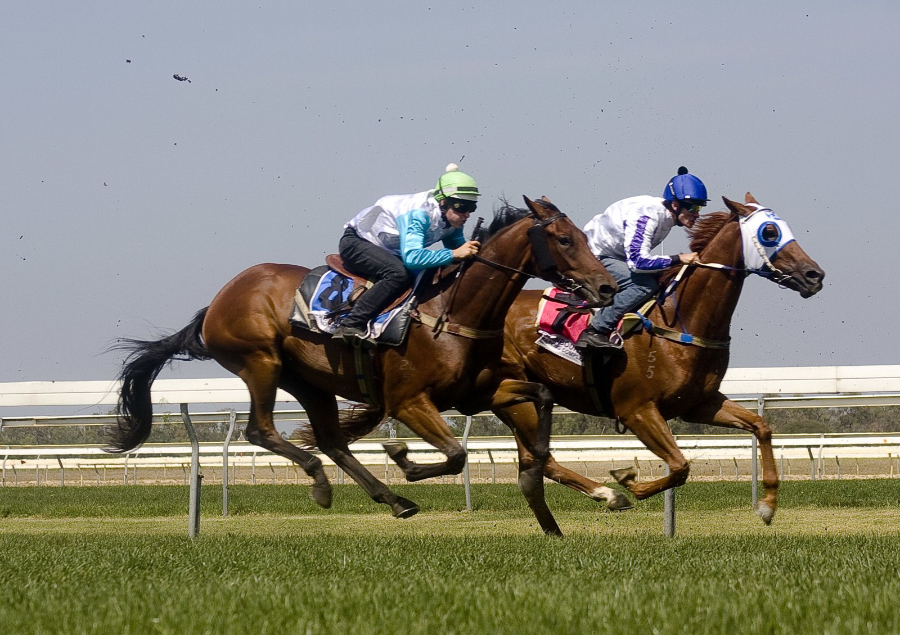

Cavalli, de Flightline, caza a Ferrous en la raya y gana a la primera en Keeneland
El potro de dos años Cavalli, hijo de Flightline, ganó en su debut un maiden sobre la milla de hierba de Keeneland al alcanzar a Ferrous en los últimos trancos y vencer por un cuello.

La carrera no empezó bien para él. Salió colocado cerca de cabeza, pero pasó por delante de las tribunas tirando de la boca. En la primera curva tuvo que frenarse al quedar encajonado entre dos rivales. A partir de ahí se calmó y viajó quinto, mientras Ferrous, hijo de Nyquist, marcaba el ritmo por la recta de enfrente.
Cavalli corría con capucha. Se abrió de los palos al encarar la recta final, empezó a desplegar zancada y atrapó a Ferrous justo en el poste. Seminal fue tercero. El crono se paró en 1:37,27 sobre terreno firme.
Era la séptima carrera del 9 de octubre, un maiden para dos años dotado con 110.000 dólares. Las apuestas le daban a 6-1. Con esta primera salida, sus ganancias quedan en 62.233 dólares.
Cavalli corre para Ran Jan Racing, Inc., que también lo crió en Kentucky, y lo prepara Brendan P. Walsh. Ya había pasado dos veces por subasta. Como destetado, se vendió por 675.000 dólares en la venta de noviembre de Fasig-Tipton de 2024. Como añojo, se quedó sin vender en 375.000 dólares en la subasta de septiembre de Keeneland de 2025.
Es el primer producto de Star of India, una hija de Medaglia d'Oro. Detrás vienen un medio hermano añojo por Not This Time y otro destetado por Munnings. La yegua fue cubierta por Maxfield, con el producto previsto para la próxima primavera.
La segunda madre, Up (IRE), es hija de Galileo y ganó varias pruebas de grupo en Irlanda. Es media hermana de Dutch Art (GB), ganador de Grupo I en Inglaterra, y madre de Aspray, vencedor del Lake Placid Stakes (Grupo II).
Para Flightline, hijo de Tapit con su primera generación en las pistas, Cavalli es el noveno ganador.
Por Martín Larrañeta